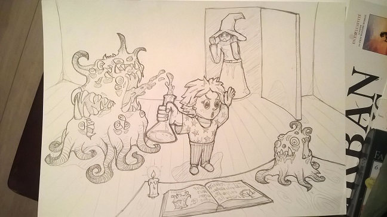
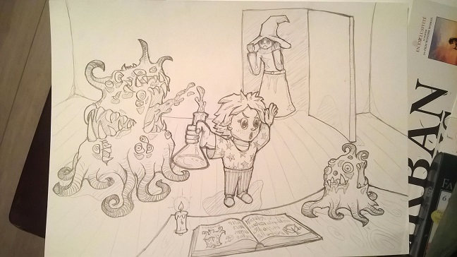

À propos de moi
Je suis Alsacien. J'y ai fais une classe préparatoire scientifique puis j'ai été admis à Polytech Marseille pour une formation d'ingénieur informaticien. J'ai pris goût aux différents problèmes d'architecture et de performance que je retrouve dans les moteurs de jeu vidéo, et je me suis intéressé aux différents aspects artistiques impliqués dans la réalisation de jeu vidéo.
Depuis l'automne dernier, je suis à l'Université du Québec à Chicoutimi (l'UQAC) pour un double diplôme avec un master en informatique comprenant une majeure en développement de jeux vidéo. Actuellement, je cherche à développer mes capacités en programmation (surtout en C++ moderne) et ma connaissance des moteurs de jeu. Je continue à me former aux autres aspects du jeu vidéo : je me renseigne régulièrement sur le game design, et je tente de développer des univers et des personnages originaux en dessinant ou, plus rarement, en écrivant.
Quelques dessins :)


 
